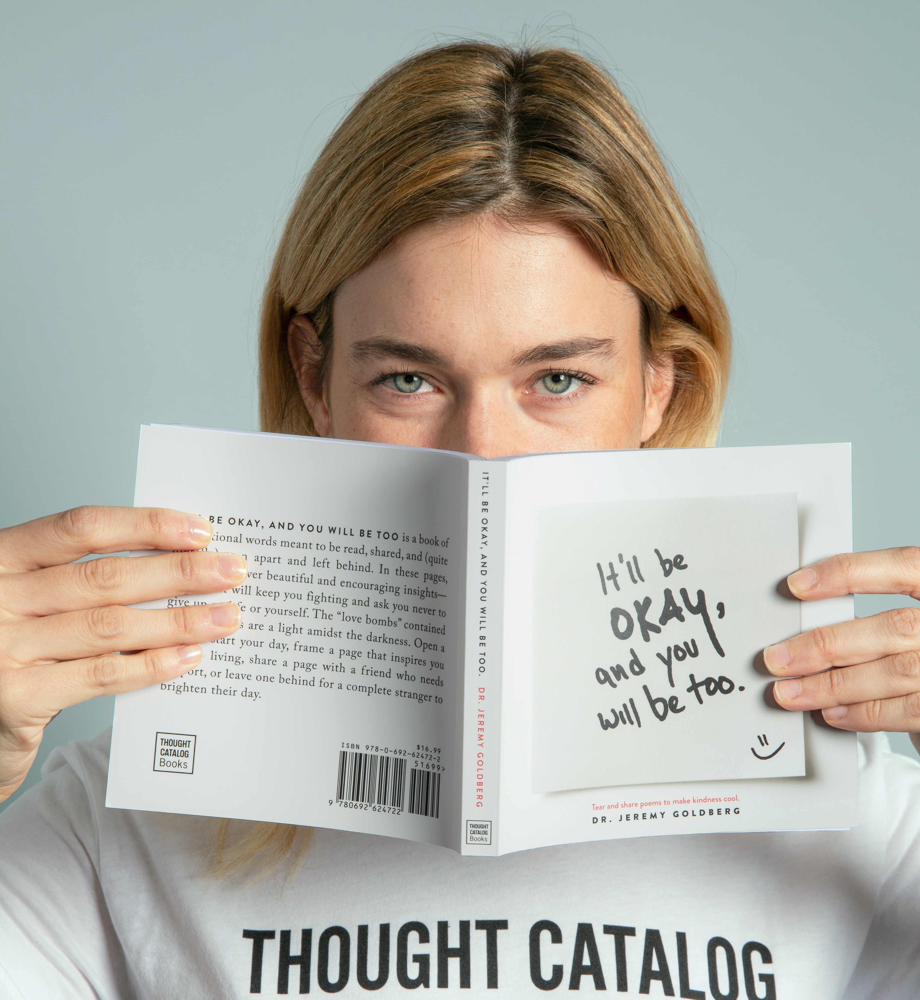

“현재 우리나라에서 가장 발전성 있는 사업은 무엇일까?”
바로 IT관련 분야라
생각합니다.
초고속성장이라는 말에 걸맞게 많은 인력을 필요로 하고 있고,
앞으로도 무궁무진한 발전 가능성이 있는 분야입니다.
이러한 상황에서
IT가 성장하는 흐름에 맞춰
제
자신도 발전하고 싶다는 생각을 했습니다.
변화가 빠르고 트렌드가 금방 바뀌는 만큼 이에 적응하며,
나태해지지 않고 항시 자기개발을 하여야한다는 것을
알고 있습니다.
이러한
IT기업에 입사하여 끊임없이 배우며,
저를 발전시키고 회사를 발전시키는데 이바지할 수 있는
귀한 인재로 거듭나고 싶습니다.
instroduction
- Motive
- Strength
- Technology
- Study
WHY?

"책을 통해 세상을 읽고, 나를 발전시키다."
초등학교 시절 책 읽고 독후감을 쓰면 스티커를 하나씩 주는 제도가 있었는데,
스티커가 많이 받고 싶어 한달 동안에도
10~20개의 독후감을 썼던 기억이 있습니다.
그때부터 책을 좋아하게 되었고,
최근에는 코로나 이슈로 인하여 디지털화가 가속화되고,
언택트 시대가 열린다는 종류의 미래서적을 많이 보게 되었습니다.
5년이라는 기간 동안 서비스직을 직업으로 삼으며 살아왔었는데,
이러한 책들의 내용이 저에게는 큰 충격으로 다가왔습니다.
바뀐 시대에 적응 못하고,
현실에 안주하며 살다가 어느 한 순간 실직자로 내몰리기 보다는
제가 시대를 이끄는 리더가 되고 싶다는 생각을 했고,
비로소 IT분야에 눈을 뜨게 되었습니다.
마냥 어렵고 다른 세계라고 생각했던 IT분야에 대해서
새롭게 하나씩 알아갈수록 더 빠져들게 되었고,
이 분야의 전문가가 되기 위하여 관련 서적도 많이 읽고,
많이 배우며 저를 발전시켜야겠다고 생각하게 되었습니다.
초등학교 시절 책 읽고 독후감을 쓰면 스티커를 하나씩 주는 제도가 있었는데,
스티커가 많이 받고 싶어 한달 동안에도
10~20개의 독후감을 썼던 기억이 있습니다.
그때부터 책을 좋아하게 되었고,
최근에는 코로나 이슈로 인하여 디지털화가 가속화되고,
언택트 시대가 열린다는 종류의 미래서적을 많이 보게 되었습니다.
5년이라는 기간 동안 서비스직을 직업으로 삼으며 살아왔었는데,
이러한 책들의 내용이 저에게는 큰 충격으로 다가왔습니다.
바뀐 시대에 적응 못하고,
현실에 안주하며 살다가 어느 한 순간 실직자로 내몰리기 보다는
제가 시대를 이끄는 리더가 되고 싶다는 생각을 했고,
비로소 IT분야에 눈을 뜨게 되었습니다.
마냥 어렵고 다른 세계라고 생각했던 IT분야에 대해서
새롭게 하나씩 알아갈수록 더 빠져들게 되었고,
이 분야의 전문가가 되기 위하여 관련 서적도 많이 읽고,
많이 배우며 저를 발전시켜야겠다고 생각하게 되었습니다.

DREAM